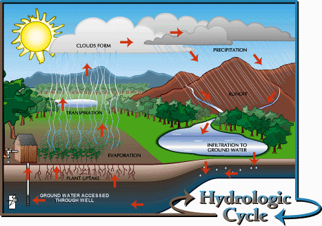
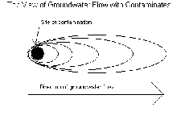
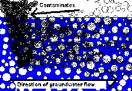
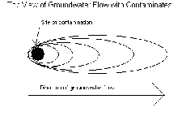
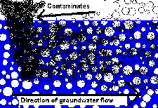
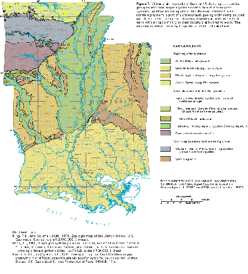

Article # 74
What Are the Processes Behind Groundwater, Why Is This Important in Arkansas, and What Problems Do Groundwater Users Encounter?


A5: Physical Geography: Groundwater
“Groundwater: Processes, Places, Problems”
By Elizabeth Thomas, Simon Branton-Housley, and Michael Terry
Principles of Geography: Geog 1305, Section 2719
Prepared: March 6, 2001
What Are the Processes Behind Groundwater, Why Is This Important in Arkansas, and What Problems Do Groundwater Users Encounter?
Water is an important resource that we must all use wisely. In Arkansas and in the world, there is limited supply of water, and it must be used carefully. The water that we have now is the same water that we will always have. Dinosaurs drank the same water that you drink. Three fourths of earth’s surface is covered with water, but only a small fraction is freshwater. Of this freshwater, only a small percentage is readily available for use. The majority of freshwater is either frozen in glaciers or underground (Zoller:1994:5). The water that is trapped underground is called groundwater. Groundwater is important to many people because it is the only source of freshwater that is available to them (Pye, Patrick & Quarles:1983:15). In Arkansas, 64% of all fresh water that is pumped for use is groundwater, so it is clearly a very important resource here (Renken:1998:2). Understanding the processes behind groundwater like how it goes into the ground, what happens to it once it is there, and how the activities of humans affect it helps us to better understand what we should do to preserve and protect this important resource.
Groundwater is a piece of an even bigger system called the Hydrologic cycle (see figure below). This cycle starts when water enters the air by evaporating from bodies of water, such as lakes, rivers, oceans, etc. This water moves higher in the atmosphere where it forms clouds. These clouds move to different areas (upper right in figure) and will eventually release their water as precipitation (rain, snow, hail and sleet). This precipitation falls to the ground where it runs down to the lowest point, called runoff. When water runs down the land, it can pick up contaminates, such as soil, fertilizer, animal waste, and other harmful substances. When the water runoff goes back into rivers and streams, these contaminates can get into this surface water, making them unusable. Even worse than that is if the contaminants leech into the ground and get into the water table, they can stay for quite some time and pollute water for years.

(http://www.epa.gov/seahome/groundwater/src/cycle.htm, 2000)
Imagine the ground as a giant sponge. Water that goes into the sponge is absorbed and is held. With groundwater, the spongy layer is actually sand and gravel. The space in between the rocks is where the water is. If you have ever held a wet sponge, then you know water leaks out of the bottom. Gravity is what causes this to occur. With groundwater, a layer of clay is beneath the sandy layer and keeps the water from sinking through. This sand/clay construction is called aquifer. Aquifers can range in size from a few hundred miles across, to ones the size of California and can contain quadrillions of liters of water (“Ground Water”: US Geological Survey Poster). Aquifers can also contain many layers of mini-aquifers that have their own structure and form. Such an arrangement is an aquifer system (Renken:1998:2). The structure of an aquifer is dependent on how permeable the rock is from which the aquifer is made. Permeability is the ability of water to move through that rock. Gravel has more space between it and therefore is more permeable than sand, so water can flow better and faster through gravel.
As
seen in the image above, groundwater does not just sit in the ground;
it actually flows through the ground (right to left in image).
Normally this flowing through the ground cleans the water and
prepares it to be reused, but say, for instance, a gas station had a
fuel tank leaking; the introduction of substances into the ground
would spread from its source and be carried by the moving water
(“Groundwater Contamination”, Pye, Kelly:1984:42). Two
views of groundwater flow with contaminates:
 

The first picture illustrates how groundwater movement from a site can carry a substance quite far from its originating point, much like air pollution. The second picture shows a cross section of the first, with the contamination (black fuzzy area) being carried by the water. The white circles represent sand and gravel particles (““Get the Ground Water Picture”:1995:3).
Arkansas has several aquifer systems with good groundwater; however, both human activities and some natural processes threaten the quality of Arkansas groundwater (Bryant: 1985:5). Below is a map showing the aquifer systems of Arkansas, Mississippi, and Louisiana. The major systems in Arkansas are the Surficial aquifer system, the Ouachita Mountains aquifer, and the Ozark Plateaus aquifer system, as shown on the map (Renken:1998:2). There are also several other minor aquifer systems. Each aquifer and/or aquifer system faces different challenges posed by the human community.
 The most important aquifer in Arkansas is the Mississippi alluvial aquifer, which is part of the Surficial aquifer system of eastern Arkansas and western Mississippi. Groundwater is a very important resource in this part of the state because of the dramatic increase in soybean and rice production since the 1960’s. As the need for more water for irrigation grew, the groundwater from this aquifer was used to fill that need (Jackson:1984:2).
Of all the groundwater used in Arkansas, 88% is used for irrigation, and much of that is used to grow the rice in eastern Arkansas (Smith:1989:26). Problems in this area have arisen, though, as the amount of water being withdrawn from aquifers has exceeded the amount of water being recharged. Groundwater levels have dropped one hundred feet over the course of the 20th century, and they continue to drop at an ever-increasing rate (Jackson:1984:4). As a result, the concentration of dissolved solids, like sodium, in groundwater increases, making the water unsuitable for drinking and irrigation (Bryant:1985:5).
Over pumping has also been a problem in southern Arkansas. There, groundwater from the Sparta Sand aquifer (part of the Mississippi embayment aquifer system) is an important source of water for homes and industries. As already noted, this leads to an increase in water salinity. This problem is compounded by the fact that this area also has naturally occurring saltwater intrusion into its aquifers (Jackson:1984:4). This saltwater comes from deep in the ground and enters aquifers through faults or permeable sediment (Bryant:1985:6). To make matters worse, the groundwater in southern Arkansas is being polluted by industrial waste (Jackson:1984:4). Industries often bury their wastes in underground storage tanks, just as human waste is often stored in septic tanks. When the material from which these tanks are made erodes, the waste seeps out into the soil and pollutes groundwater there, as shown in the above diagrams of groundwater flow with contaminates (“The Pucker Effect”:4-5).
In northwest Arkansas, groundwater is an important source of drinking water for rural communities (Jackson:1984:4). The major aquifer systems there are the Ozark Plateaus aquifer system and the Western Interior Plains confining system (Renken:1998:3). Compared with the Mississippi alluvial aquifer, the Ozark aquifers are much smaller and much less productive (Smith:1989:26). That is why most larger communities rely on surface water for drinking (Jackson:1984:4). However, for rural communities, groundwater issues are very important. Aquifers there have been polluted by both human and animal waste. Animal waste has become a major problem in recent years because of the increase in “factory farms” where large numbers of chickens, cows, and pigs are raised in close proximity to be slaughtered once they are grown (Tolchin:1998:2-3). Because there are so many animals so close together, huge amounts of waste are produced. Unfortunately, this waste is being stored in open areas where it seeps underground into water or in tanks and storage units that are prone to leak. In northwest Arkansas, many streams and aquifers have been badly polluted from chicken waste (Tolchin:1998:4).
The situation in central Arkansas is similar to that of northwest Arkansas. Groundwater is generally used in rural communities, and surface water is used in the more densely populated areas. The major threats to groundwater in central Arkansas are from leaking septic tanks and industrial waste storage tanks (Jackson:1984:5).
Because people rely so heavily on groundwater for drinking and irrigation, it is a very important resource. Especially here in Arkansas, a better understanding and awareness of groundwater among the general public would be an important step in preserving this precious commodity. Government agencies such as the Environmental Protection Agency make regulations for and monitor the quality of groundwater, but it is really the responsibility of the people of each community to ensure that their water is safe to drink. Citizens should become informed and stand up to farms and industries that are overdrawing or polluting groundwater and surface water sources. If we make our water unusable, where will we find suitable water? The water we have now is the same water we have always had and always will have. We cannot afford to carelessly throw it away.
References
Arkansas Department of Environmental Quality web sit: Water Division
http://www.adeq.state.ar.us/water/branch_planning.htm
Arkansas State Plant Board web site: Groundwater Page.
http://www.plantboard.org/pesticides_groundw.html
Bryant, Charles T. (1985). Groundwater Problems in Arkansas.
“EPA Protects Public Health From Arsenic In Drinking Water, Statement by the President: Safe, Clean Drinking Water” (Jan. 17, 2001). www.epa.gov
“Get The Groundwater Picture.” The Watercourse and Council for Environmental Education. Project WET Curriculum and Activity Guide.
“Ground Water.” (?) US Geological Survey Poster. US Geological Survey. Denver, CO.
Groundwater Contamination. (1984). Geophysics Study Committee. Washington D.C. National Academy Press.
Jackson, Jeanne. (1984). “Arkansas Groundwater.” League of Women Voters of Arkansas.
Pye, V., Patrick, R., Quarles, J.(1983). Groundwater Contamination in the United States. Philadelphia: University of Pennsylvania Press.
Renken, Robert A. (1998) Groundwater Atlas of the United States; Arkansas, Louisiana, Mississippi (HA 730-F). United States Geological Survey. http://cap.water.usgs.gov/gwa/ch_f/index.html
Smith, Richard M. (1989). The Atlas of Arkansas. Fayettville: The University of Arkansas Press.
“The Pucker Effect.” The Watercourse and Council for Environmental Education.
Project WET Curriculum and Activity Guide.
Tolchin, Tanya. (1998). “Wasting Away.” Washington: Multinational Monitor Zoller, Uri. (1994). Groundwater Contamination and Control. New York: Marcel Dekker.